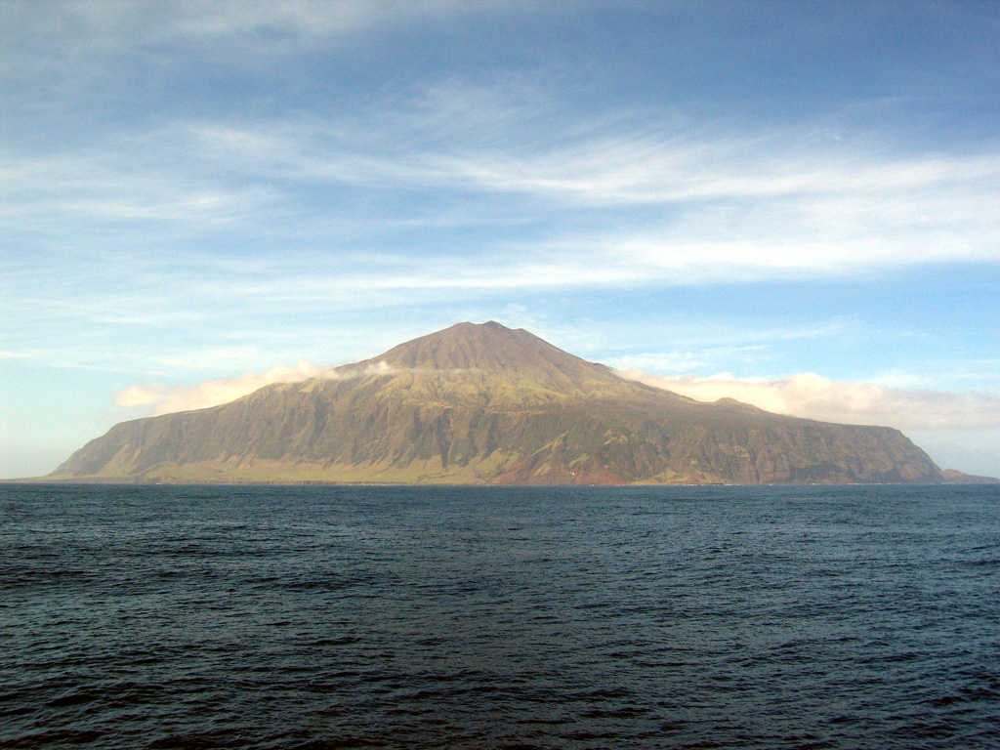

Stories from the Edge of the World

The World's Most Remote Settlement
Far removed from anywhere, Edinburgh of the Seven Seas stands alone as the world's most isolated community - more than 2400 kilometers separate it from the next place where people live.
Getting to Tristan da Cunha means a six-day boat trip from Cape Town - so when someone arrives, it's quite a thing.
Living apart forged a people who depend on each other, readily greet newcomers, moreover cherish their remarkable surroundings.
No Airstrip, No Rush
You can't fly into Tristan da Cunha: boats are the only way of getting there or leaving.
Throughout the year, vessels arrive at the island on repeat trips - they deliver parcels, letters and occasionally even new friends to the community.
The sea sets the pace for everything around here: waiting isn't something you should do, it's just the way it is.

Currency and Connectivity
Life on Tristan da Cunha isn't driven by banknotes: instead, folks rely on each other - a shared sense of belonging carries greater weight than pounds sterling.
Though they do use British currency, everyday transactions happen through goodwill rather than cold, hard cash. Getting online feels like winning something small, considering how hard it can be.
People find the real connections bloom through simple moments - a cup of tea, dinner together. It's how connections truly form.
A Volcano at the Heart
Queen Mary's Peak dominates the island: it's a sleeping volcano, quiet since its last burst in 1961.
When the volcano blew, everyone fled to England. Yet, as soon as conditions stabilized, each person came back home.
The mountain now symbolizes resilience: folks feel deeply connected to this place.
